import numpy as np
import graphviz as gvModul 8 Struktur Data: Binary Tree, Binary Search Tree (BST)
Kembali ke Struktur Data (dengan Python)
Implementasi binary tree
Binary Tree dengan array
class ArrayBintree:
def __init__(self, dtype, height, emptydata=-9999):
self.dtype = dtype
self.height = height
self.emptydata = emptydata
self.array_size = 2**(height+1) - 1
self.array = np.empty(self.array_size, dtype=dtype)
for i in range(self.array_size):
self.array[i] = emptydata
def get_root(self):
root_data = self.array[0]
if root_data == self.emptydata:
return None
else:
return root_data
def set_root(self, newdata):
self.array[0] = newdata
def get_data(self, node_idx):
if node_idx < self.array_size:
return self.array[node_idx]
else:
print("Error get_data: indeks di luar ukuran tree")
return None
def set_data(self, node_idx, newdata):
if node_idx < self.array_size:
self.array[node_idx] = newdata
else:
print("Error set_data: indeks di luar ukuran tree")
def get_left_child_idx(self, node_idx):
left_idx = 2*node_idx + 1
if left_idx < self.array_size:
return left_idx
else:
return -1
def get_left_child(self, node_idx):
left_idx = self.get_left_child_idx(node_idx)
if left_idx != -1:
data = self.array[left_idx]
if data != self.emptydata:
return data
else:
return None
else:
return None
def get_right_child_idx(self, node_idx):
right_idx = 2*node_idx + 2
if right_idx < self.array_size:
return right_idx
else:
return -1
def get_right_child(self, node_idx):
right_idx = self.get_right_child_idx(node_idx)
if right_idx != -1:
data = self.array[right_idx]
if data != self.emptydata:
return data
else:
return None
else:
return None
def get_parent_idx(self, node_idx):
if node_idx == 0:
return -1
idx = int(np.floor( (node_idx - 1)/2 ))
return idx
# preorder: tengah, kiri, kanan
def get_preorder(self, current=0, result=None):
is_starting_node = False
if result == None:
is_starting_node = True
result = []
# tengah
current_data = self.array[current]
if current_data != self.emptydata:
result.append(current_data)
# kiri
left_idx = self.get_left_child_idx(current)
if left_idx != -1:
self.get_preorder(current=left_idx, result=result)
# kanan
right_idx = self.get_right_child_idx(current)
if right_idx != -1:
self.get_preorder(current=right_idx, result=result)
if is_starting_node:
return result
# inorder: kiri, tengah, kanan
def get_inorder(self, current=0, result=None):
is_starting_node = False
if result == None:
is_starting_node = True
result = []
# kiri
left_idx = self.get_left_child_idx(current)
if left_idx != -1:
self.get_inorder(current=left_idx, result=result)
# tengah
current_data = self.array[current]
if current_data != self.emptydata:
result.append(current_data)
# kanan
right_idx = self.get_right_child_idx(current)
if right_idx != -1:
self.get_inorder(current=right_idx, result=result)
if is_starting_node:
return result
# postorder: kiri, kanan, tengah
def get_postorder(self, current=0, result=None):
is_starting_node = False
if result == None:
is_starting_node = True
result = []
# kiri
left_idx = self.get_left_child_idx(current)
if left_idx != -1:
self.get_postorder(current=left_idx, result=result)
# kanan
right_idx = self.get_right_child_idx(current)
if right_idx != -1:
self.get_postorder(current=right_idx, result=result)
# tengah
current_data = self.array[current]
if current_data != self.emptydata:
result.append(current_data)
if is_starting_node:
return result
def get_digraph_simple(self):
digraph = gv.Digraph()
for idx in range(self.array_size):
data = self.array[idx]
if data != self.emptydata:
digraph.node("node" + str(idx), label=str(data))
left_idx = self.get_left_child_idx(idx)
right_idx = self.get_right_child_idx(idx)
if left_idx != -1:
digraph.edge("node" + str(idx), "node" + str(left_idx))
if self.array[left_idx] == self.emptydata:
digraph.node("node" + str(left_idx), label="NULL", shape="none")
if right_idx != -1:
digraph.edge("node" + str(idx), "node" + str(right_idx))
if self.array[right_idx] == self.emptydata:
digraph.node("node" + str(right_idx), label="NULL", shape="none")
return digrapharraybintree = ArrayBintree(int, 2)print(arraybintree.array)[-9999 -9999 -9999 -9999 -9999 -9999 -9999]arraybintree.set_root(10)print(arraybintree.array)[ 10 -9999 -9999 -9999 -9999 -9999 -9999]display(arraybintree.get_digraph_simple())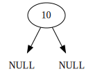
arraybintree.set_data(
arraybintree.get_left_child_idx(0),
5
)print(arraybintree.array)[ 10 5 -9999 -9999 -9999 -9999 -9999]display(arraybintree.get_digraph_simple())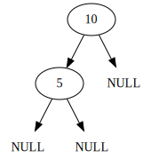
arraybintree.set_data(
arraybintree.get_right_child_idx(0),
19
)print(arraybintree.array)[ 10 5 19 -9999 -9999 -9999 -9999]display(arraybintree.get_digraph_simple())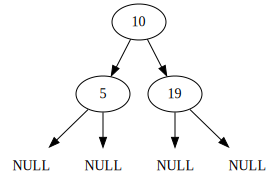
arraybintree.set_data(
arraybintree.get_right_child_idx(arraybintree.get_left_child_idx(0)),
37
)print(arraybintree.array)[ 10 5 19 -9999 37 -9999 -9999]display(arraybintree.get_digraph_simple())
arraybintree.get_data(
arraybintree.get_right_child_idx(arraybintree.get_left_child_idx(0))
)37arraybintree.array[5] = 98
arraybintree.array[6] = 62print(arraybintree.array)[ 10 5 19 -9999 37 98 62]display(arraybintree.get_digraph_simple())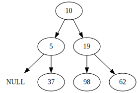
arraybintree.array[3] = 25print(arraybintree.array)[10 5 19 25 37 98 62]display(arraybintree.get_digraph_simple())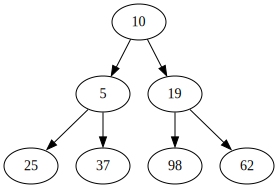
arraybintree.get_preorder()[10, 5, 25, 37, 19, 98, 62]arraybintree.get_inorder()[25, 5, 37, 10, 98, 19, 62]arraybintree.get_postorder()[25, 37, 5, 98, 62, 19, 10]Binary Tree dengan pointer (linked binary tree)
class BintreeNode:
def __init__(self, data, left=None, right=None):
self.data = data
self.left = left
self.right = rightclass LinkedBintree:
def __init__(self):
self.root = None
def is_empty(self):
if self.root == None:
return True
else:
return False
def get_root_data(self):
if self.is_empty():
print("Error get_root_data: tree sedang kosong")
return None
else:
return self.root.data
def set_root_data(self, newdata):
if self.is_empty():
self.root = BintreeNode(newdata)
else:
self.root.data = newdata
# preorder: tengah, kiri, kanan
def get_preorder(self, current=None, result=None, get_addresses=False):
is_starting_node = False
if result == None:
is_starting_node = True
result = []
current = self.root
if current != None:
# tengah
if (not get_addresses):
result.append(current.data)
else:
result.append(current)
# kiri
if current.left != None:
self.get_preorder(current.left, result=result)
# kanan
if current.right != None:
self.get_preorder(current.right, result=result)
if is_starting_node:
return result
# inorder: kiri, tengah, kanan
def get_inorder(self, current=None, result=None, get_addresses=False):
is_starting_node = False
if result == None:
is_starting_node = True
result = []
current = self.root
if current != None:
# kiri
if current.left != None:
self.get_inorder(current.left, result=result)
# tengah
if (not get_addresses):
result.append(current.data)
else:
result.append(current)
# kanan
if current.right != None:
self.get_inorder(current.right, result=result)
if is_starting_node:
return result
# postorder: kiri, kanan, tengah
def get_postorder(self, current=None, result=None, get_addresses=False):
is_starting_node = False
if result == None:
is_starting_node = True
result = []
current = self.root
if current != None:
# kiri
if current.left != None:
self.get_postorder(current.left, result=result)
# kanan
if current.right != None:
self.get_postorder(current.right, result=result)
# tengah
if (not get_addresses):
result.append(current.data)
else:
result.append(current)
if is_starting_node:
return result
# berdasarkan algoritma preorder traversal :D
def get_digraph_simple(self, current=None, node_name=None, result=None):
is_starting_node = False
if result == None:
is_starting_node = True
result = gv.Digraph()
current = self.root
node_name = "root"
if current != None:
# tengah
result.node(node_name, label=str(current.data))
# kiri
left_name = node_name + "->left"
result.edge(node_name, left_name)
self.get_digraph_simple(
current=current.left, node_name=left_name, result=result
)
# kanan
right_name = node_name + "->right"
self.get_digraph_simple(
current=current.right, node_name=right_name, result=result
)
result.edge(node_name, right_name)
else:
result.node(node_name, label="NULL", shape="none")
if is_starting_node:
return resultlinkedbintree = LinkedBintree()print(linkedbintree.root)Nonelinkedbintree.root = BintreeNode(26)print(linkedbintree.root)<__main__.BintreeNode object at 0x10ccbd060>print(linkedbintree.root.data)26linkedbintree.root.left = BintreeNode(89)
linkedbintree.root.right = BintreeNode(54)display(linkedbintree.get_digraph_simple())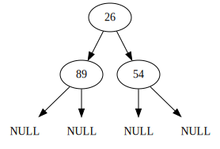
linkedbintree.root.left.right = BintreeNode(43)display(linkedbintree.get_digraph_simple())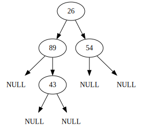
print(linkedbintree.root.left.right.data)43linkedbintree.root.right.right = BintreeNode(11)
linkedbintree.root.right.right.left = BintreeNode(72)
linkedbintree.root.right.right.right = BintreeNode(35)display(linkedbintree.get_digraph_simple())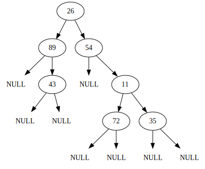
linkedbintree.root.left.right.left = BintreeNode(90)
linkedbintree.root.left.right.left.right = BintreeNode(16)display(linkedbintree.get_digraph_simple())
linkedbintree.get_preorder()[26, 89, 43, 90, 16, 54, 11, 72, 35]linkedbintree.get_inorder()[89, 90, 16, 43, 26, 54, 72, 11, 35]linkedbintree.get_postorder()[16, 90, 43, 89, 72, 35, 11, 54, 26]Binary Search Tree (BST) dengan pointer (linked BST)
Binary Search Tree (BST) adalah binary tree dengan beberapa sifat dan fitur tambahan. Sehingga, untuk implementasi BST, kita cukup menambahkan beberapa method ke class binary tree yang sudah dibuat. Daripada mengetik ulang semua method yang sudah dibuat di class binary tree, kita bisa menerapkan salah satu prinsip OOP yaitu inheritance, agar langsung mewariskan semua fitur yang sudah dibuat di implementasi binary tree.
Karena lebih fleksibel (tidak ada keterbatasan ukuran), kita akan membuat BST dengan pointer (juga disebut linked BST) saja, berarti meng-inherit dari class LinkedBintree.
(Membuat BST dengan array juga memungkinkan, meng-inherit dari class ArrayBintree, tetapi akan ada beberapa pertimbangan tambahan, misalnya untuk memastikan posisi node yang di-insert tidak melebihi kapastias array.)
class LinkedBST(LinkedBintree):
def __init__(self):
# menggunakan __init__ dari parent class,
# melalui super() yaitu parent class
super().__init__()
# semua method dari LinkedBintree otomatis sudah terdefinisi
# cari elemen di BST
def search(self, x):
temp = self.root
while (temp != None):
if x == temp.data:
return x
elif x < temp.data:
temp = temp.left
else:
temp = temp.right
return None
# insertion
def insert(self, newdata):
if self.root == None:
self.root = BintreeNode(newdata)
return
temp = self.root
while (temp != None):
if newdata == temp.data:
print("Error insert: data sudah ada di BST, yaitu", newdata)
return
elif newdata < temp.data:
if temp.left == None:
temp.left = BintreeNode(newdata)
return
else:
temp = temp.left
else: # newdata > temp.data
if temp.right == None:
temp.right = BintreeNode(newdata)
return
else:
temp = temp.right
# deletion
def delete(self, x, inorder_pred=False):
if self.is_empty():
print("Error: BST kosong")
return
prev = self.root
turn = ""
if x < prev.data:
if prev.left == None:
print("Error delete: tidak ditemukan data yang bernilai", x)
return
else:
temp = prev.left
turn = "left"
elif x > prev.data:
if prev.right == None:
print("Error delete: tidak ditemukan data yang bernilai", x)
return
else:
temp = prev.right
turn = "right"
else:
temp = prev
while (temp != None):
if temp.data == x:
break
elif x < temp.data:
if temp.left == None:
print("Error delete: tidak ditemukan data yang bernilai", x)
return
else:
prev = temp
temp = temp.left
turn = "left"
else: # x > temp.data
if temp.right == None:
print("Error delete: tidak ditemukan data yang bernilai", x)
return
else:
prev = temp
temp = temp.right
turn = "right"
# kasus 0 children
if (temp.left == None) and (temp.right == None):
if turn == "left":
prev.left = None
elif turn == "right":
prev.right = None
del temp
return
# kasus 1 child, di kiri
elif (temp.left != None) and (temp.right == None):
if turn == "left":
prev.left = temp.left
elif turn == "right":
prev.right = temp.left
del temp
return
# kasus 1 child, di kanan
elif (temp.left == None) and (temp.right != None):
if turn == "left":
prev.left = temp.right
elif turn == "right":
prev.right = temp.right
del temp
return
# kasus 2 children
elif inorder_pred: # metode inorder predecessor (left subtree)
inorder_left = []
self.get_inorder(current=temp.left, result=inorder_left)
replacement = inorder_left[-1] # elemen terakhir
self.delete(replacement, inorder_pred=inorder_pred)
temp.data = replacement
return
else: # metode inorder successor (right subtree)
inorder_right = []
self.get_inorder(current=temp.right, result=inorder_right)
replacement = inorder_right[0]
self.delete(replacement, inorder_pred=inorder_pred)
temp.data = replacement
returnlinkedbst = LinkedBST()linkedbst.insert(10)display(linkedbst.get_digraph_simple())linkedbst.insert(27)display(linkedbst.get_digraph_simple())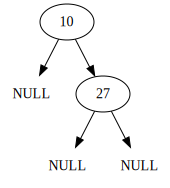
linkedbst.insert(5)display(linkedbst.get_digraph_simple())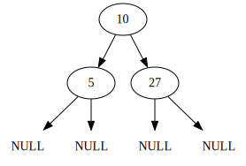
linkedbst.insert(8)display(linkedbst.get_digraph_simple())
linkedbst.insert(8)Error insert: data sudah ada di BST, yaitu 8display(linkedbst.get_digraph_simple())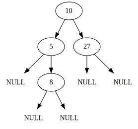
linkedbst.insert(16)display(linkedbst.get_digraph_simple())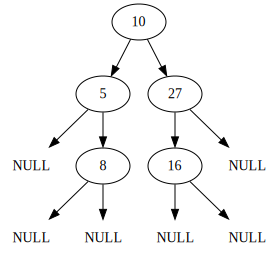
linkedbst.insert(38)display(linkedbst.get_digraph_simple())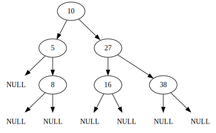
linkedbst.insert(3)display(linkedbst.get_digraph_simple())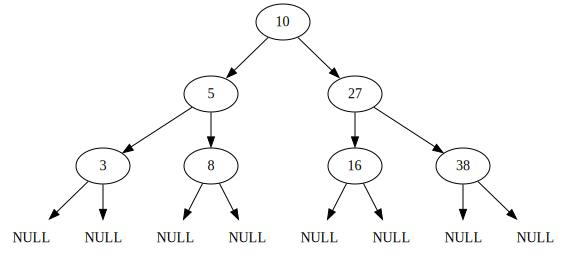
linkedbst.insert(9)display(linkedbst.get_digraph_simple())
linkedbst.get_preorder()[10, 5, 3, 8, 9, 27, 16, 38]linkedbst.get_inorder()[3, 5, 8, 9, 10, 16, 27, 38]linkedbst.get_postorder()[3, 9, 8, 5, 16, 38, 27, 10]linkedbst.delete(50)Error delete: tidak ditemukan data yang bernilai 50display(linkedbst.get_digraph_simple())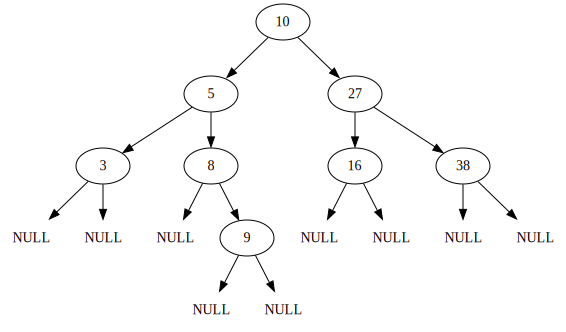
linkedbst.delete(3)display(linkedbst.get_digraph_simple())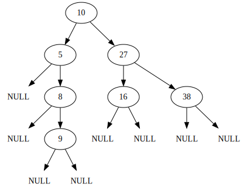
linkedbst.delete(8)display(linkedbst.get_digraph_simple())
linkedbst.delete(27)display(linkedbst.get_digraph_simple())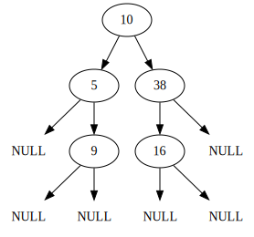
linkedbst.delete(10)display(linkedbst.get_digraph_simple())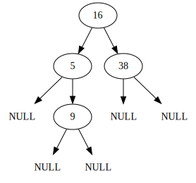
linkedbst.delete(16, inorder_pred=True)display(linkedbst.get_digraph_simple())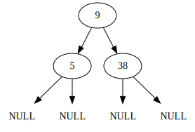
(TODO) (Pengayaan) LinkedBintree dari preorder, inorder, dan/atau postorder
Kita akan membuat LinkedBintree saja, karena height dari tree yang akan dibentuk tidak bisa ditentukan sebelum tree selesai terbentuk, sedangkan pembuatan ArrayBintree melibatkan penentuan height di awal-awal sebelum tree dibentuk.
Jika diberikan preorder dengan inorder, atau postorder dengan inorder, maka hanya ada satu binary tree yang mungkin.
Namun, apabila diberikan preorder dengan postorder, maka binary tree yang dibentuk belum tentu unik. Meskipun demikian, apabila ditambahkan syarat bahwa binary tree yang dibentuk harus bersifat complete, maka binary tree yang dibentuk menjadi unik.
Oleh karena itu, untuk kasus diberikan preorder dengan postorder, ada algoritma biasa (tanpa syarat tersebut) dan algoritma dengan syarat tersebut.
LinkedBintree dari preorder dan inorder
def linkedbintree_from_preorder_inorder(
preorder, inorder, is_starting_node=True
):
# Nanti di paling bawah tree kalau inorder sudah kosong,
# tidak perlu buat node lagi; langsung return None (NULL)
if len(inorder) == 0:
return None
# 1. Di antara semua elemen inorder, mana yang paling kiri di preorder?
# Simpan index inorder nya
selesai = False
preorder_idx = 0
while (preorder_idx < len(preorder)) and (not selesai):
# lihat tiap elemen preorder dari kiri ke kanan,
elemen_preorder = preorder[preorder_idx]
# dan untuk tiap elemen preorder, periksa satu-satu apakah sama dengan
# salah satu elemen inorder
inorder_idx = 0
while (inorder_idx < len(inorder)) and (not selesai):
if inorder[inorder_idx] == elemen_preorder:
selesai = True
else:
inorder_idx += 1
preorder_idx += 1
# 2. Buatlah node dengan data di index tersebut di inorder.
# Kalau belum ada root (karena LinkedBintree belum dibentuk sama sekali),
# buatlah objek LinkedBintree dengan rootnya adalah node tersebut
current_root = BintreeNode(inorder[inorder_idx])
if is_starting_node:
result = LinkedBintree()
result.root = current_root
# 3. Pisah inorder menjadi dua bagian,
# yaitu sebelah kiri dari elemen inorder_idx dan sebelah kanan darinya
inorder_left = inorder[:inorder_idx]
inorder_right = inorder[(inorder_idx+1):]
current_root.left = linkedbintree_from_preorder_inorder(
preorder, inorder_left, is_starting_node=False
)
current_root.right = linkedbintree_from_preorder_inorder(
preorder, inorder_right, is_starting_node=False
)
if is_starting_node:
return result
else:
return current_roothasil_pre_in = linkedbintree_from_preorder_inorder(
preorder=[26, 89, 43, 90, 16, 54, 11, 72, 35],
inorder=[89, 90, 16, 43, 26, 54, 72, 11, 35]
)display(hasil_pre_in.get_digraph_simple())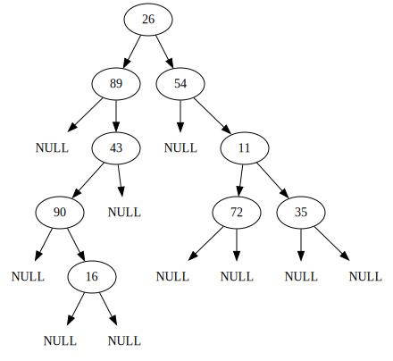
LinkedBintree dari postorder dan inorder
Algoritma ini hampir sama dengan algoritma membentuk binary tree dari preorder dan inorder. Bedanya, di algoritma ini, dicari elemen inorder yang paling kanan di postorder, daripada yang paling kiri di preorder.
def linkedbintree_from_postorder_inorder(
postorder, inorder, is_starting_node=True
):
# Nanti di paling bawah tree kalau inorder sudah kosong,
# tidak perlu buat node lagi; langsung return None (NULL)
if len(inorder) == 0:
return None
# 1. Di antara semua elemen inorder, mana yang paling KANAN di postorder?
# Simpan index inorder nya
selesai = False
postorder_idx = len(postorder)-1 # mulai dari paling kanan, daripada dari 0
while (postorder_idx >= 0) and (not selesai):
# lihat tiap elemen preorder DARI KANAN KE KIRI,
elemen_postorder = postorder[postorder_idx]
# dan untuk tiap elemen postorder, periksa satu-satu apakah sama dengan
# salah satu elemen inorder
inorder_idx = 0
while (inorder_idx < len(inorder)) and (not selesai):
if inorder[inorder_idx] == elemen_postorder:
selesai = True
else:
inorder_idx += 1
postorder_idx -= 1
# 2. Buatlah node dengan data di index tersebut di inorder.
# Kalau belum ada root (karena LinkedBintree belum dibentuk sama sekali),
# buatlah objek LinkedBintree dengan rootnya adalah node tersebut
current_root = BintreeNode(inorder[inorder_idx])
if is_starting_node:
result = LinkedBintree()
result.root = current_root
# 3. Pisah inorder menjadi dua bagian,
# yaitu sebelah kiri dari elemen inorder_idx dan sebelah kanan darinya
inorder_left = inorder[:inorder_idx]
inorder_right = inorder[(inorder_idx+1):]
current_root.left = linkedbintree_from_postorder_inorder(
postorder, inorder_left, is_starting_node=False
)
current_root.right = linkedbintree_from_postorder_inorder(
postorder, inorder_right, is_starting_node=False
)
if is_starting_node:
return result
else:
return current_roothasil_post_in = linkedbintree_from_postorder_inorder(
postorder=[16, 90, 43, 89, 72, 35, 11, 54, 26],
inorder=[89, 90, 16, 43, 26, 54, 72, 11, 35]
)display(hasil_post_in.get_digraph_simple())(TODO) LinkedBintree dari preorder dan postorder (cara biasa)
def linkedbintree_from_preorder_postorder(
preorder, postorder, is_starting_node=True
):
if (not is_starting_node):
if len(preorder) == 0 or len(postorder) == 0:
return None
if len(preorder) == 1:
return BintreeNode(preorder[0])
if len(postorder) == 1:
return BintreeNode(postorder[0])
# 1. Buatlah node baru dengan datanya adalah preorder[0]
# (atau sama saja elemen terakhir dari postorder).
# Kalau belum ada root (karena LinkedBintree belum dibentuk sama sekali),
# buatlah objek LinkedBintree dengan rootnya adalah node tersebut
current_root = BintreeNode(preorder[0])
if is_starting_node:
result = LinkedBintree()
result.root = current_root
# 2. Tentukan list postorder untuk left subtree dan untuk right subtree:
# 2a. Carilah letak preorder[1] di postorder, misal postorder_idx
# 2b. Belah postorder menjadi dua, dengan postorder_idx masuk ke kiri,
# dan elemen terakhir postorder tidak masuk keduanya
postorder_idx = 0
while (postorder_idx < len(postorder) and
postorder[postorder_idx] != preorder[1]):
postorder_idx += 1
# 0 <= indeks < (postorder_idx+1)
postorder_left = postorder[ 0 : (postorder_idx+1) ]
# (postorder_idx+1) <= indeks < elemen terakhir (indeks -1)
postorder_right = postorder[ (postorder_idx+1) : -1 ]
# 3. Tentukan list preorder untuk left subtree dan untuk right subtree:
# 3a. Carilah letak postorder[-2] di preorder, misal preorder_idx
# 3b. Belah preorder menjadi dua, dengan preorder_idx masuk ke kanan,
# dan elemen pertama preorder tidak masuk keduanya
preorder_idx = 0
while (preorder_idx < len(preorder) and
preorder[preorder_idx] != postorder[-2]):
preorder_idx += 1
# 1 <= indeks < preorder_idx
preorder_left = preorder[ 1 : preorder_idx ]
# preorder_idx <= indeks
preorder_right = preorder[ preorder_idx : ]
print("preorder_left", len(preorder_left))
print("preorder_right", len(preorder_right))
print("postorder_left", len(postorder_left))
print("postorder_right", len(postorder_right))
# 4. Langkah rekursif: melakukan langkah yang sama di left subtree dan
# right subtree, hasilnya disambung ke current_root
current_root.left = linkedbintree_from_preorder_postorder(
preorder=preorder_left, postorder=postorder_left,
is_starting_node=False
)
current_root.right = linkedbintree_from_preorder_postorder(
preorder=preorder_right, postorder=postorder_right,
is_starting_node=False
)
if is_starting_node:
return result
else:
return current_roottest_pre_post = linkedbintree_from_preorder_postorder(
preorder=["F", "B", "A", "D", "C", "E", "G", "I", "H"],
postorder=["A", "C", "E", "D", "B", "H", "I", "G", "F"]
)preorder_left 5
preorder_right 3
postorder_left 5
postorder_right 3
preorder_left 1
preorder_right 3
postorder_left 1
postorder_right 3
preorder_left 1
preorder_right 1
postorder_left 1
postorder_right 1
preorder_left 0
preorder_right 2
postorder_left 2
postorder_right 0display(test_pre_post.get_digraph_simple())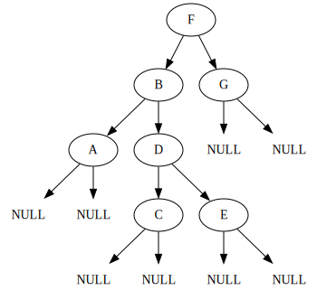